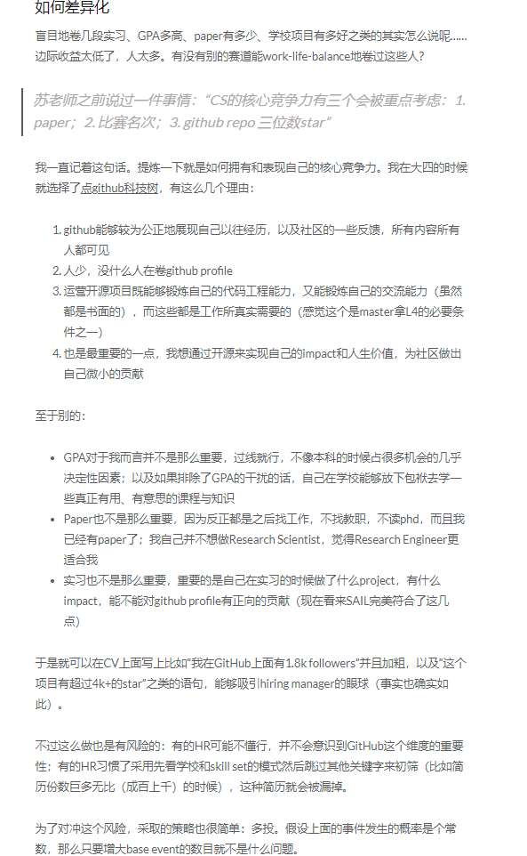
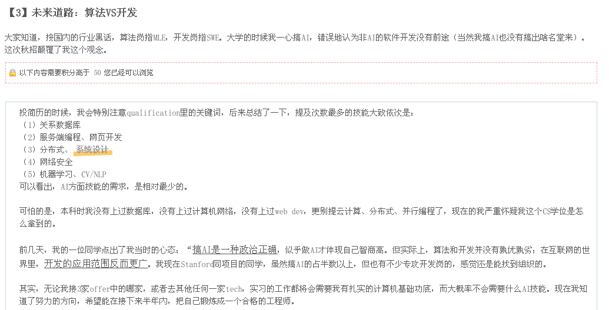
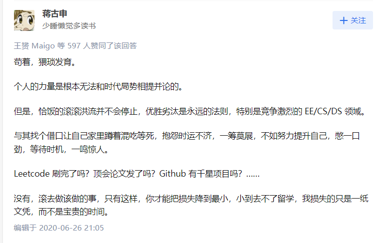

原文po在了flappyhimself.netlify.app上，用了外网博客同步服务的原因搞个梯子才能上
喜欢（做过的事）。
计算机学习。
从去年暑假开始接触cs61a开始，一年过去了，我就是计算机零基础到现在能够手搓红黑树，也能够实现基本shell，2048这种简单游戏的这个样子，也挺满意了吧。
总结去年的fall和spring学了数据结构，离散和算法，老师都挺负责任的（尤其是算法老头子），但是NYU的cs是真的水并且相当理论，算法和离散的课程就完全没有实操的空间，没有实操没有跑分，只有一成不变的伪代码标准答案。不要来学，但是好拿课好拿分那是肯定的。
未来的课程：没有啥大计划，之后反正找工作跟我上的课几乎没有关系，除了几门硬课os和分布式系统可以搞一点项目，之后可以混一点研究生课搞点科研试一试。
-
文科全部放到大四上。这些通识教育算是完完全全把我拍醒了，说着社会主义的话，像资本主义的生活就是你们了吧，更何况给我带来的批判性思维的提升还不如我豆瓣上写一篇书评。
-
原本我喜欢哲学是因为太过于热血，以为研究哲学就能掌握时间真理的感觉，其实只是当今经济周期衰退 + 内卷的组合拳把我打拧巴了，在这里无病呻吟罢了。除这个原因之外大概会多选几门哲学课，也就提升一下口语水平。
-
总的来说就是，在NYU上学能自学搞懂的就不要上课，多选难课混科研，多选grad cs混项目，多选prob点一个概率学的技能树，在学一点哲学点一下辩论和口语的技能树，感觉我的大学的学术生涯就是这样了。
然后在空闲时间自学了cs61b和algorithm的前半部分，嗯，总的来说就是很爽，有美感，也有实践。
暑假： 暑假初期搞了好多爱好上的事情，复刻了一下doom，尝试了一下汇编语言写点婴幼儿程序，但是耍完之后我发现还是找一件事情开始专注的做比较好，就像当时开始翻阅csapp的动机一样。学完csapp之后感觉整个人都想起飞，有很多感兴趣的地方，每一章我都想深入去了解，但是又抱着对未来没啥用的一种焦虑感，但是直到最后总还是找到兴趣点一头扎进去了。
回顾整个暑假基本上用来彻底放松了，每天不是吃就是睡觉，纯纯地当了一个懒狗。
lab做到shell lab就没心思继续做下去了，接下来像做一些unix网络编程的事情。
虽然看完csapp懂了一些皮毛，但是总的来说计算机系统对我来说还是像一个黑盒。
游戏
过去的一年里因为发病把我所有的游戏都删光了，把好友都删光了，但是我发现好像没了游戏，我这个人的底色都没有了。
想起来从小到大陪伴我最久的不是哪个身边的朋友，可能是gameloft手游，可能是4399，可能是一些垃圾页游，可能是彩虹六号和守望先锋。。。
这一年过去了，虽然我逼着我自己只用cpu和内存稍微好一点的电脑，拿的是集显玩的ff14。
也许另外一个时间线里我正在读游戏设计，和彦祖（我的一个朋友）成为了同学？
npy
这里就不爆了啊，反正没有，不知道未来会不会想要有。
坚定。（目前确定的态度）
我也不知道我是什么时候这么开始热衷于一些鸡血一般的东西（明知道没什么用。。。）
实事求是，不讲虚的，给我来钱。这都是什么时代了，还讲什么新思想。赚钱嘛，不含糊。
“难道留学经历中刷题和学习是最重要的吗在这天天学习？”。这句话是没错的，和我价值观相符，但是市场是残酷的，没有需求没有政策推动那就是硬生生等死。爱好和主业大部分时间就还得是分开来，为了赚钱就还是好好刷题搞实习，写论文，写repo进大厂，在NYC摸鱼和闲逛就彻底放松。学都学了还分啥心。
专注于一件事情能收获成就感。 暑假初期搞了好多爱好上的事情，复刻了一下doom，尝试了一下汇编语言写点婴幼儿程序，但是耍完之后我发现还是找一件事情开始专注的做比较好，就像当时开始翻阅csapp的动机一样。学完csapp之后感觉整个人都想起飞，有很多感兴趣的地方，每一章我都想深入去了解，但是又抱着对未来没啥用的一种焦虑感，但是直到最后总还是找到兴趣点一头扎进去了。
高中班主任经常提一句话“办法总比困难多。”
我们高中时期常常各种隐喻笑话我们班主任，但是他在对待我们的心态上绝对是一个合格的班主任。要我说在天一这段实践学到最棒的东西，那一定是实事求是的精神。彦祖就是很讲究实事求是精神的人（大雾），我从他身上学到了很多东西。回想起以前肝各类学科的时光，这么说我还是很怀念高中的啊。
踌躇
我们从小就被教育要做成功的事情，假设成功这个目标一定是对的，我们现在应该做什么呢？
而出了国之后就会发现意识形态不再统一，周围的同学并不会把搞钱放在第一位，大多数人会追随自己内心的声音，更何况高中之后就很少有确定的通往成功的道路了，大部分人大多时候都很迷茫。
除了不断地学习实践和试错，互联网上有很多整理的repo，在我看来这些都是难能可贵的隔空和有智慧的前辈谈话，有指导性的建议。
repo： 一位thu学长记录的访谈 n+e的博客
大未来 政治上的事情谁都说不准，未来十年真的是一点预判都没有，毕竟最近科技树长的太快了，没准就赛博朋克了呢（笑
个人未来
异化：针对THU这种GPA为主的评价方式，我的观察是，不少人就失去了自我，被推着走（我也确实有段时间这样）。即使是有了GPA，之后如果没想清楚自己想干什么，或者是其他能力并不能匹配这个GPA，都是很致命的问题。再加上没有校内的论坛，每个年级之间的信息交流不通畅，自己也缺乏职业规划，结果就是一路跑着跑着，跑到终点就不知道该干啥了。真是十分悲哀的一件事。
尤其是今年真正到了国外之后认识到了不能用他人的眼光看待自己。
但是对我来说去美国学cs最重要的因素无非是为了更好的经济条件这无可厚非。毕竟想多了也没什么用，也不多说屁话了，放弃自己心里所谓的“反卷文艺情怀了”，（毕竟再不找工作我得饿死
整体来讲我觉得我个人工作状态突然从高中的紧绷变成了更放松的专注，我想这也是更加sustainable的。
总的来说，我认为发生什么都是可能的。
最近也心血来潮想稍微找找工作经验帖子看看，迟早要面对的不如早点看一看心里有个数，
他写的相当好啊，膜。 找工回忆录 其中有好多事情是我现在正在迷茫的，有我现在看了相当赞同的，我po一下：  
好吧，就目前来看这种帖子对我这种弱鸡来讲还是没什么参考价值，毕竟自己也只是浅浅地接触了计算机领域，实践太少，连热爱都不知道是什么。
但是不可变的未来，最高概率得分的行为我觉得还是：
- 多多社交积累人脉，善待身边的人。
- 多多尝试干一些以前没干过的事情。
- 多多准备成为一个普通人：卷，把一些我觉得有趣的项目搞了，刷题，刷paper，试试看能不能升到更好的cs的学校（这意味着更好的成长空间），学习些分布式和数据库找工作攒劲，找个普通实习先干起来，当然尽量都是自己感兴趣的。（乐
- 卷开源，卷开源，卷开源喵
毕竟现在还是一个学生，其他的事情收益不确定风险大，再说这些这些对我基本都是无痛的事情，我也乐此不疲。 